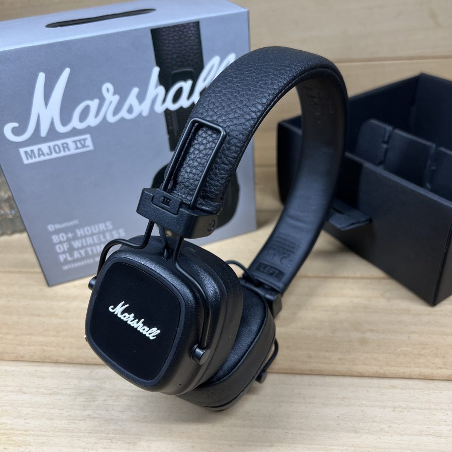
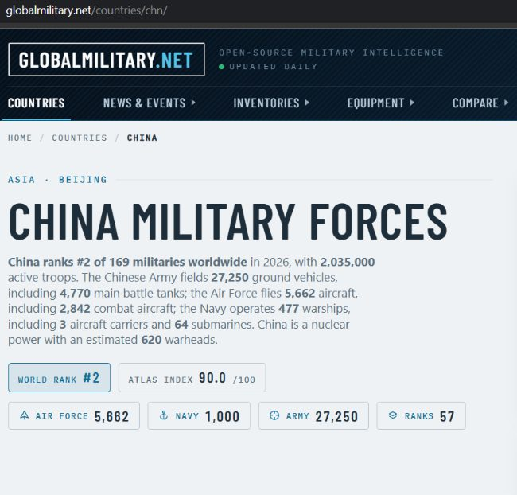

Remplacement de la batterie d’un casque audio Marshall Major IV.
Trouver la prise de terre.
Dans le cadre de ma recherche de stage en électronique et cybersécurité : comment se retrouver face à la porte d’un recruteur grâce à une faille du bâtiment, et comment la corriger.

Application au domaine militaire chinois.